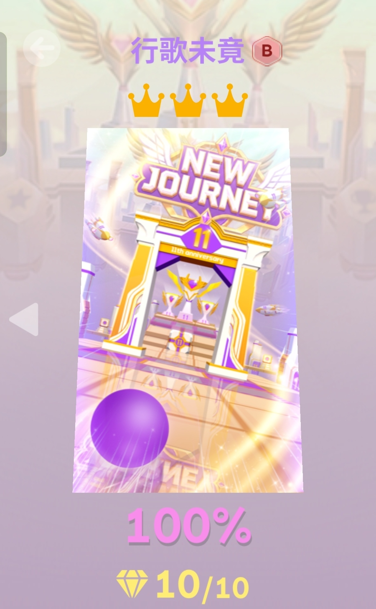
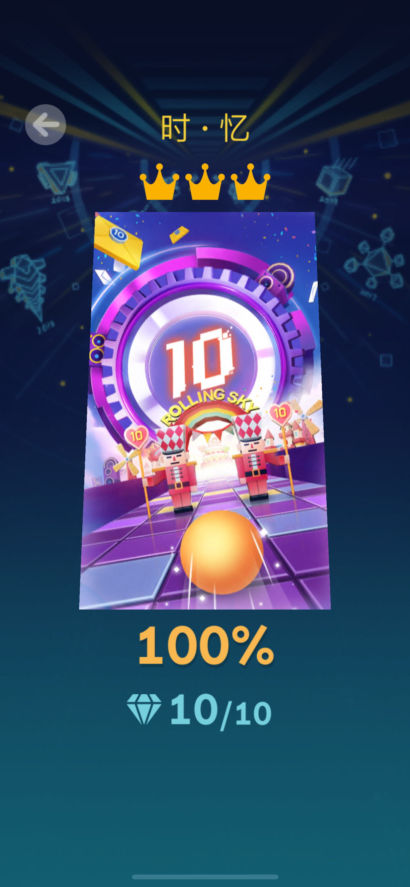

欢庆11周年

退游整整一年，本以为自己早已是“手残党”，对于多指操作和读谱节奏已全然生疏。但不得不承认，当年在指尖沉淀下来的肌肉记忆，并没有随着时间消散。重新握起设备的瞬间，那种熟悉的感觉立刻回归。紫金交错的传送门、行云流水的路线设计，这波11周年的诚意拉满，打起来确实让人心跳加速(真)。
往期回顾
回顾退游前的那些日子，可以说是被《滚动的天空》狠狠折磨的峥嵘岁月。从最开始的举步维艰，到后来勉强能跟上《时忆》的节奏，每一步都伴随着无数次“手残”的失误和差点摔手机的冲动

关注我
来来来这是什么主页来看一下
点我!!!